Inakadate
Inakadate · Aomori
Inakadate
Highlighted on the Aomori map.
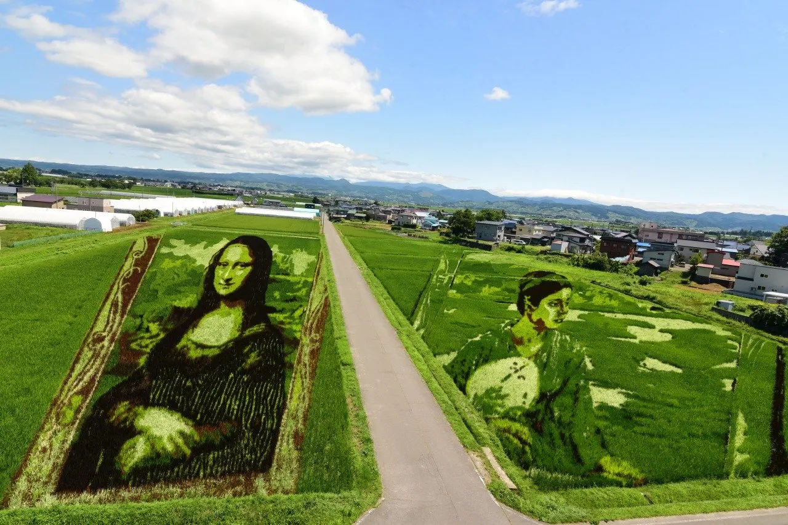
Stay
民泊宿屋 PittINN 田舎館
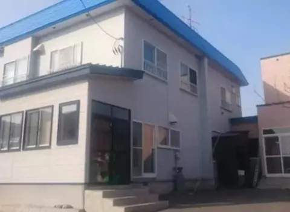
PittINN Inakadate
Private guesthouse in Inakadate, Aomori.
田舎の隠れ家 Cottage Hideaway
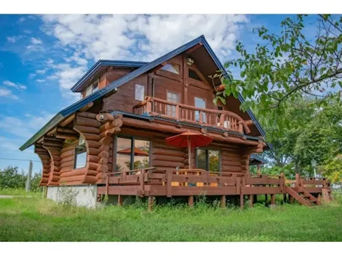
Inaka no Kakurega Cottage Hideaway
Cottage in Inakadate, Aomori.
Dining
駅前食堂
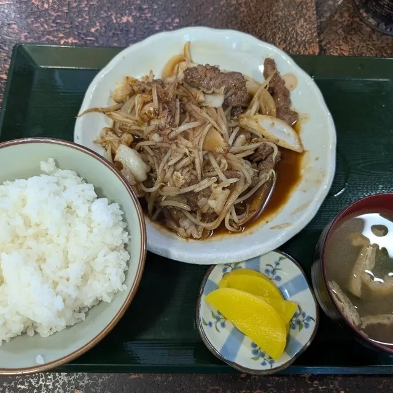
Ekimae Shokudou
カフェ キエロ
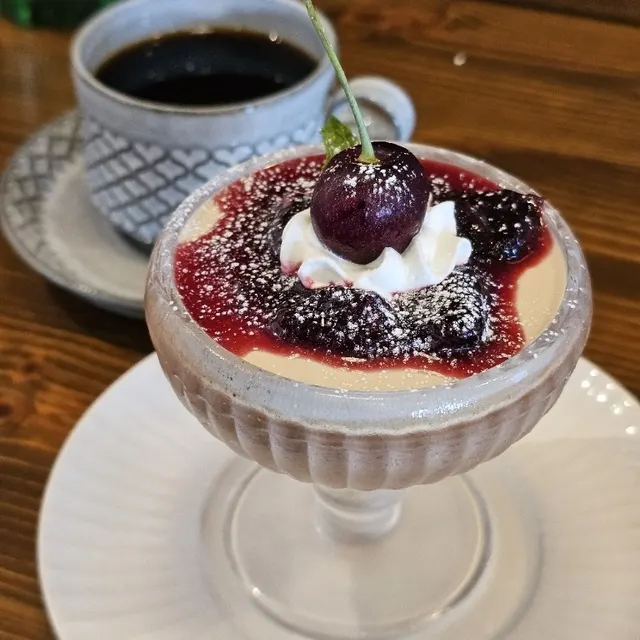
Kafe Kiero
平川温泉
Hirakawa Onsen
CAFE食堂 田さ恋
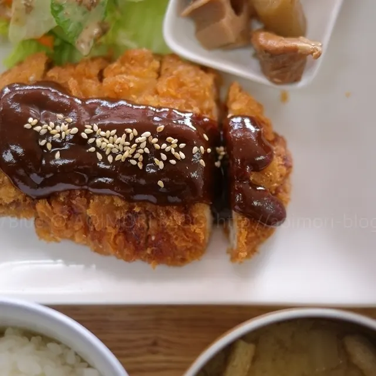
Cafe Shokudou Ta Sa Koi
いちごカフェ
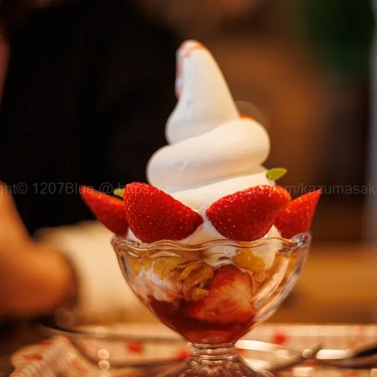
Ichigo Kafe
居酒屋川
Izakaya Kawa
寿し駒
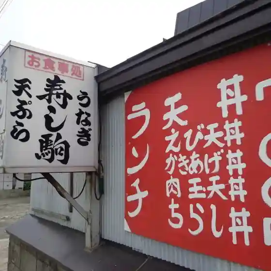
Hisashi Shi Koma
BRASSERIE suzune
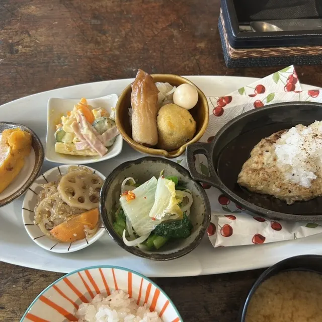
Brasserie Suzune
ジャンボあられ本舗
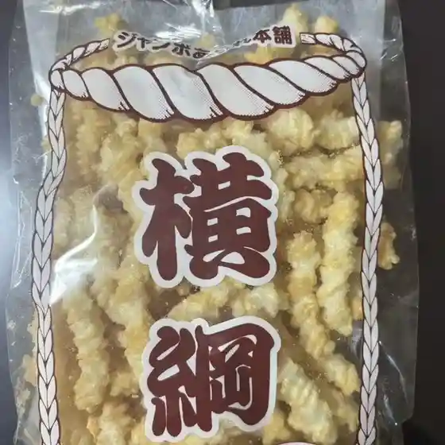
Janbo Arare Honpo
いろりばた喫茶
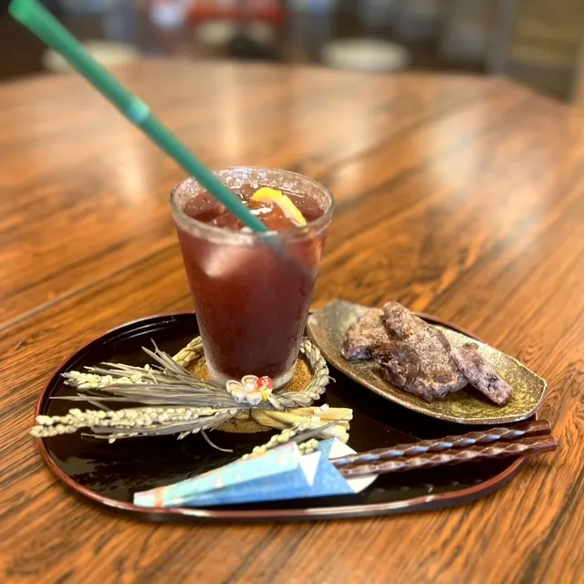
Iroribata Kissa
アイナック
Ainakku
ホルモン多恵
Horumon Tae
洋食堂セントレイ
Youshoku Dou Sentorei
田さ恋いむら
Ta Sa Koi Imura
やまや
Yamaya
居酒屋春
Izakaya Haru
ファミリーマート 田舎館畑中店
Famiriimaato Inakadate Hatanaka Mise
おしゃべりハウス10 田舎館弥生の里支店
Oshaberi Hausu 10 Inakadate Yayoi No Sato Shiten
田舎館村商工会女性部 田んぼアート友の会 売店
Inakadate Mura Shoukou Kai Josei Bu Tanbo Aato Tomonokai Baiten
ねぷた
Neputa
かねちゃんホルモン
Kanechan Horumon
酔い処こころ
Yoi Tokoro Kokoro
ピノ コーヒー ロースター
Pino Koohii Roosutaa
ファミリーマート 田舎館高樋店
Famiriimaato Inakadate Taka Hi Mise
Sights
Rice Paddy Art -Inakadate Village-
The rice paddy art began in 1993 when purple and yellow rice plants were used to make a picture of Mt.
Winter Rice-Paddy Art
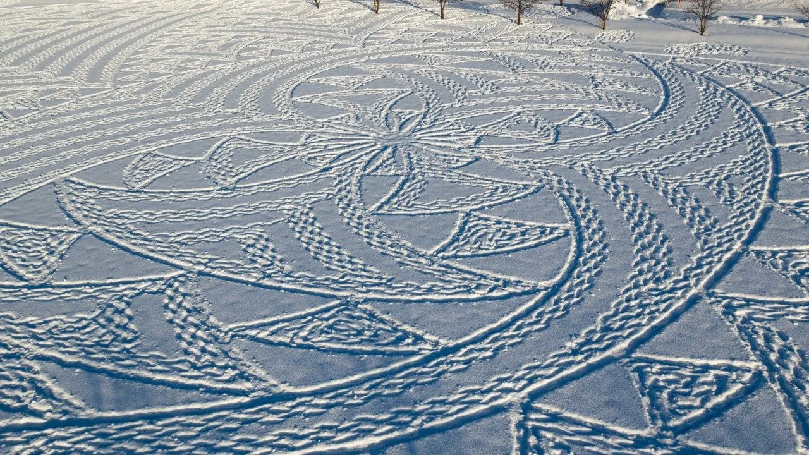
Winter Rice-Paddy Art was launched in 2016 with the goal of allowing visitors to enjoy the winter and have fun with snow.
Inakadate Village Observatory (Village Office)
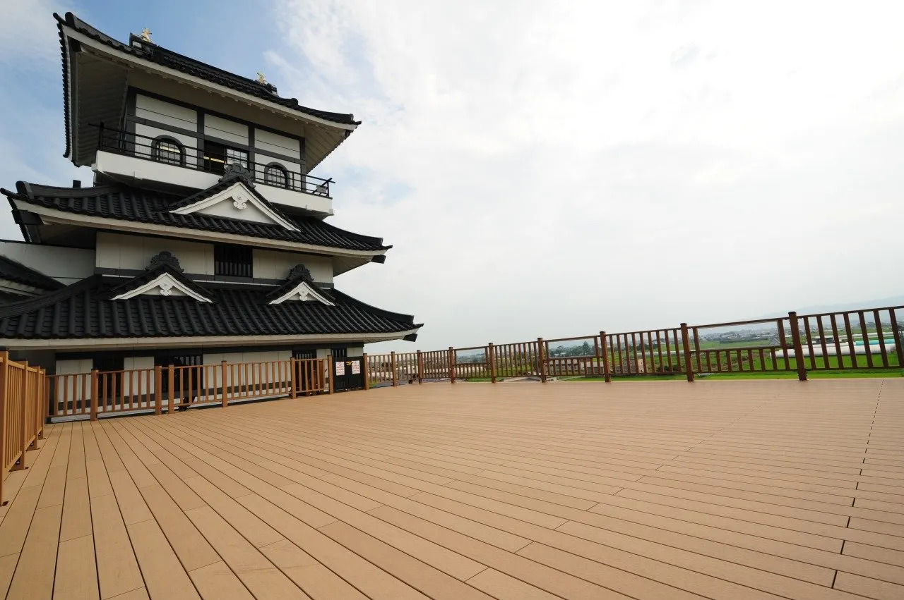
Viewpoint atop the village office for the famous rice paddy art, on view from early June to early October.
Inakadate Buried Cultural Property Center (Yayoi-kan)
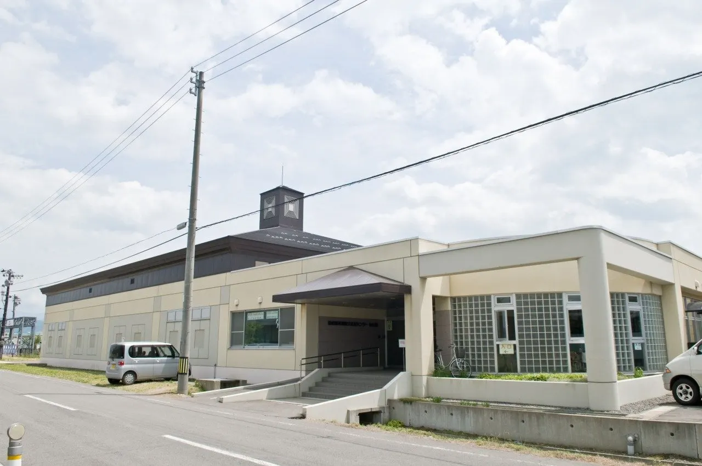
Museum showing finds from the Tareyanagi and Takabi sites and the remains of 2,100-year-old Yayoi rice paddies.
Michi-no-Eki Inakadate Yayoi no Sato
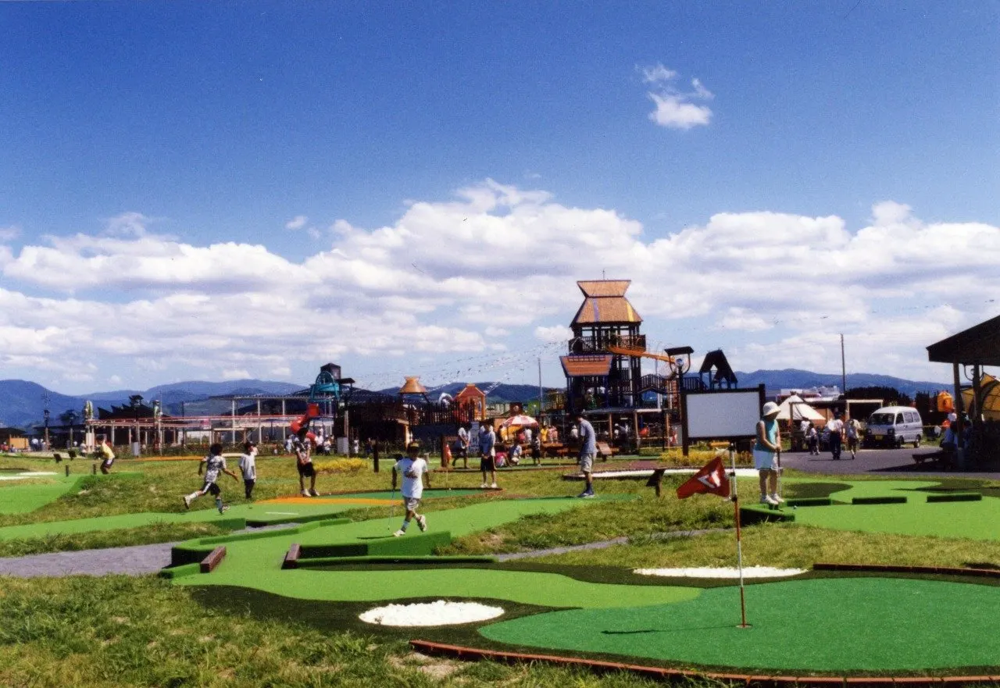
Roadside station with a farm market, restaurant, play equipment, putting golf and an animal park.
Tareyanagi Site
Yayoi-period rice paddy remains about 2,100 years old, found in 1981, proving rice farming reached northern Tohoku.
Yayoi no Sato Observatory
14 m observation tower at Roadside Station Inakadate overlooking the rice paddy art and farmland.
Yuto no Yakata
Hands-on facility for learning rice-farming culture, inspired by the Tareyanagi Yayoi paddies.
Inakadate Village Museum
Museum on rice-farming life and local art, with tools such as straw gloves and footwear.